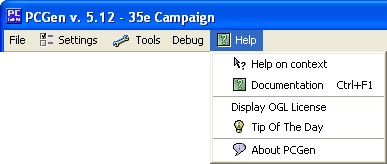

Help Menu Options

The Help menu lists the available documentation. The available options are:
- The Help on Context will display a pop-up window that will display information on whatever tab is currently
selected.
- The Documentation option brings up the full html documentation (you are looking at it now!).
- The Display OGL License will display the full Open Gaming License.
- The Display Required d20 Information will display a short blurb on the d20 license and a link to the full license.
- The Tip of the Day will display a pop up window with the Tip of the Day!
- The About option displays the current release version/date of PCGen, as well as listing the main contributors.
There are far too many contributors to list them all as PCGen is very much a community effort. Info on where to get new releases
of PCGen, how to find the PCGen community, and the LGPL license are also provided.